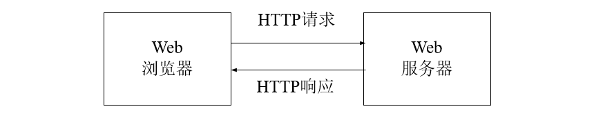
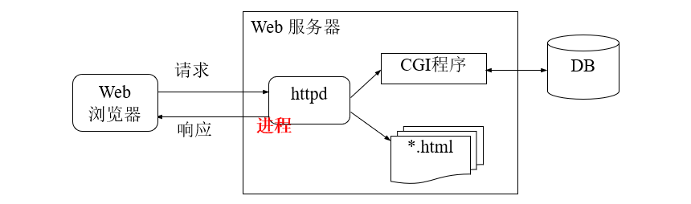
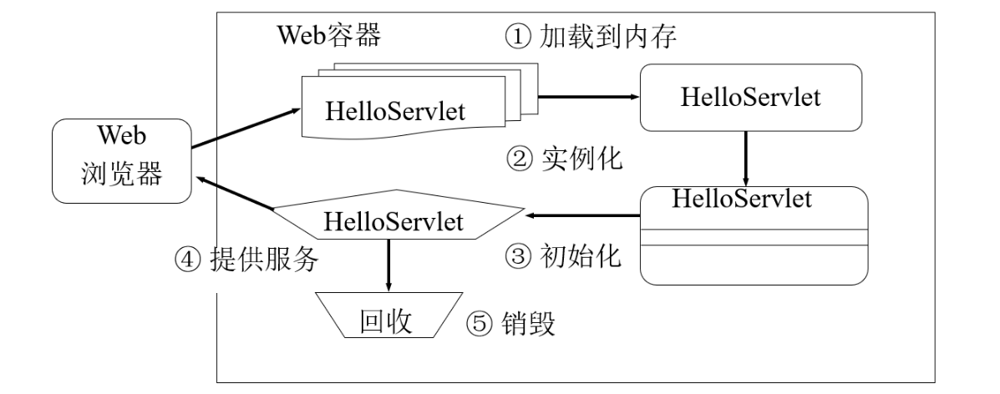
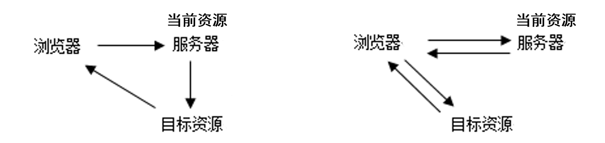
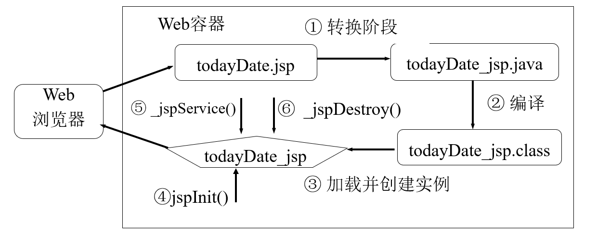
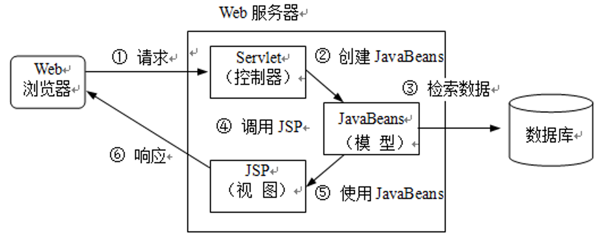
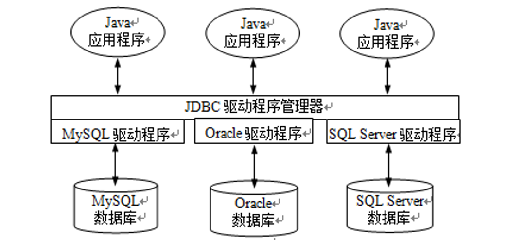

Web是基于客户/服务器（C/S）的一种体系结构。主要由三部分构成：
- Web服务器：提供Web页面和其他资源。
- Web客户端：运行在客户端的一种访问Web资源的软件。
- 通信协议：客户端和服务器之间采用HTTP协议进行通信。
HTTP：超文本传输协议（Hypertext Transfer Protocol）是Web使用的协议，一个基于请求-响应的无状态的协议，详细规定了Web客户与服务器之间如何通信。 
URL、URI、URN
Web服务器上的资源是通过URL标识的。
URL（Uniform Resource Locator）称为统一资源定位器，指向Internet上位于某个位置的某个HTML文件、图像文件和程序等资源。
URL通常由4部分组成：
- 协议名称
- 所在主机的DNS名或IP地址
- 可选的端口号
- 资源的名称
URI（Uniform Resource Identifier）称为统一资源标识符，是以特定语法标识一个资源的字符串。
由模式和模式特有的部分组成，它们之间用冒号隔开，一般格式为：schema:schema-specific-part。常见模式包括：file、ftp、http、mail等。
URN（Uniform Resource Name）称为统一资源名称，唯一标识一个资源但不指定如何访问资源。
一般形式为：urn：命名空间：资源名，例如：urn:ISBN:1-930110-59-6，它唯一地标识某一本书，但它不是URL，因为它没有指定如何检索该书。
HTML常用标签
HTML，超文本标记语言（HyperText Markup Language）是一种用来制作超文本文档的简单标记语言。
HTML常用标签：
| 标签 | 作用 |
|---|---|
<html></html> | 限定文档的开始点和结束点 |
<head> | 定义文档的头部。 |
<body> | 定义文档的主体。 |
<meta> | 提供有关页面的元信息。 |
<title> | 定义文档的标题。 |
<p> | 定义段落 |
<br> | 插入一个简单的换行符 |
<form> | 创建 HTML 表单 |
XML称为可扩展标记语言，相对HTML，XML具有如下一些特点：
- 不是标记语言，不包含任何标记，允许用户自己定义标记和属性。
- 侧重于对文档内容的描述，而不是文档的显示。
- 对数据的描述和数据本身都包含在文档中，数据具有很大的灵活性。
- 数据与显示分离。
动态文档技术
Web文档是一种重要的Web资源，通常也称为Web页面，可分为静态文档和动态文档。
动态文档是指文档的内容可根据需要动态生成。动态文档技术又分为服务器端动态文档技术和客户端动态文档技术。
在服务器端动态生成Web页面有多种方法：
-
CGI技术

-
服务器扩展技术（Servlet技术）
使服务器支持单独的可执行模块，当服务器启动时该模块就装入内存并只初始化一次。然后，就可以通过已经驻留在内存的模块副本（线程）为每个请求提供服务。这些独立的可执行的模块称为服务器扩展模块。
在Java平台上，服务器扩展模块叫做servlet容器或Web容器，负责处理客户请求、把请求传送给Servlet并把结果返回给客户。
-
动态Web页面技术（JSP技术）
在Web页面中嵌入某种语言的脚本，然后让服务器来执行这些脚本以便生成最终发送给客户的页面。
比如：ASP.NET，PHP，JSP
客户端动态文档技术是在HTML页面中嵌入脚本，这些脚本是在客户机上被执行的而不是在服务器上执行的。通过<script>标签来使用这样的脚本。
两者的区别是：
- 服务器端动态文档技术的页面，是在服务器端执行的。
- 客户端动态文档技术的页面，是在客户端执行的。
Tomcat
Tomcat安装目录的webapps目录是所有Web应用程序的根目录。
Servlet
Servlet接口是Servlet API中的基本接口，每个Servlet必须直接或间接实现该接口。
HttpServlet抽象类用来实现针对HTTP协议的Servlet，在编写Servlet时，需要继承Httpservlet类。
在HttpServlet类中增加了一个新的service()方法，格式如下：
void service(HttpServletRequest request, HttpServletResponse response)在HttpServlet中针对不同的HTTP请求方法定义了不同的处理方法，如：
-
处理GET请求的
doGet()格式如下：void doGet(HttpServletRequest request, HttpServletResponse response) -
如处理POST请求的方法是
doPost()：
Servlet生命周期：Servlet 从创建到销毁的整个过程。

- 加载到内存：使用
Class.forName()方法 - 实例化：调用
HelloServlet()构造方法 - 初始化：调用
init(ServletConfig config)方法 - 提供服务：调用
service()方法，根据HTTP类型决定调用doGet()或doPost()方法 - 销毁：调用
destroy()构造方法
常用的HTTP请求方法：
| 特征 | GET方法 | POST方法 |
|---|---|---|
| 资源类型 | 静态的或动态的 | 动态的 |
| 数据类型 | 文本 | 文本或二进制数据 |
| 数据量 | 一般不超过255个字符 | 没有限制 |
| 可见性 | 数据是URL的一部分，在浏览器的地址栏中对用户可见 | 数据不是URL的一部分而是作为请求的消息体发送，在浏览器的地址栏中对用户不可见 |
| 数据缓存 | 数据可在浏览器的URL历史中缓存 | 数据不能在浏览器的URL历史中缓存 |
常用的发送HTTP请求方法：
- 用户在浏览器的地址栏中输入URL并按回车键。
- 用户在HTML页面中点击超链接。
- 用户在HTML页面中填写表单并提交。
在Httpservlet中处理这些请求对应的方法：
| HTTP方法 | HttpServlet方法 |
|---|---|
| GET | doGet() |
| POST | doPost() |
| HEAD | doHead() |
| PUT | doPut() |
| DELETE | doDelete() |
| OPTIONS | doOptions() |
| TRACE | doTrace() |
检索请求参数
请求参数是随请求一起发送到服务器的数据，它以“名/值”对的形式发送。
- POST请求，参数在数据区。
- GET请求，参数附加在URI后面。例如：有一个URL，http://example.com?name=value，问号后面的内容称为查询串，代表请求参数。
使用HttpServletRequest中定义的方法检索这些参数：
String getParameter(String name)：获取参数，返回指定参数名的值String[] getParameterValues()：获取所有参数的值
请求转发
-
通过请求对象的
getRequestDispatcher()得到RequestDispatcher对象，该对象称为请求转发器对象。格式：
RequestDispatcher getRequestDispatcher(String path)。 -
调用
RequestDispatcher对象的forward()方法。格式：
void forward(ServletRequest request, ServletResponse response)。
路径以/开头，表示相对当前应用程序根目录；不以/开头，表示相对当前资源所在的目录。
请求转发的特点：
- 请求转发是服务器端控制权的转移，浏览器并不知情。
- 使用请求转发，在客户的浏览器地址栏中不会显示转发后的资源地址。
- 使用请求转发可以共享请求作用域中的数据。
使用请求对象存储数据
请求对象是一个作用域对象，可以在其上存储属性实现数据共享。属性包括属性名和属性值，属性名是一个字符串，属性值是一个对象。
有关属性存储的方法有4个，定义在HttpServletRequest接口中。格式如下：
public void setAttribute(String name, Object obj)public Object getAttribute(String name)public void removeAttribute(String name)public Enumeration getAttributeNames()
SerevletResponse向客户发送文本数据
调用响应对象的getWriter()方法，返回一个PrintWriter对象用于向客户发送文本数据。
在发送响应数据之前还需通过响应对象的setContentType()设置响应的内容类型。
实现响应重定向
响应重定向：Servlet向浏览器发送一个Location响应头，告诉浏览器访问其他资源。
响应重定向是通过响应对象的sendRedirect()实现，格式为：public void sendRedirect(String location)
响应重定向与请求转发的比较：
- 使用请求转发，浏览器地址栏不会显示转发后的地址。
- 使用响应重定向，浏览器的地址栏会显示转发后的地址。
- 请求转发可以共享请求作用域中的数据；响应重定向可以共享会话作用域中的数据。

部署描述文件 web.xml
用于对应用程序进行配置，初始化Web应用中所包含的组件，如Servlet等。
<servlet>元素
<servlet>元素为Web应用程序定义一个Servlet。子元素包括：
-
<servlet-name>元素：用来定义Servlet名称，必选。 -
<servlet-class>元素：指定Servlet类的完整名称，即需要带包的名称。 -
<init-param>元素：定义向Servlet传递的初始化参数。 -
<load-on-startup>元素：指定是否在Web应用程序启动时载入该Servlet。 -
<servlet-mapping>元素：定义一个映射，它指定哪个URL模式被该Servlet处理。包含：<servlet-name>元素应该是使用<servlet>元素定义的Servlet名。<url-pattern>包含要与该Servlet关联的模式字符串。
<servlet-mapping> <servlet-name>helloServlet</servlet-name> <url-pattern>/helloServlet/hello/*</url-pattern> </servlet-mapping>
URL请求的组成有三部分：协议与主机名、请求URI（上下文路径、Servlet路径、路径信息）、查询串
@WebServlet和@WebInitParam注解，在应用程序启动时被Web容器处理，容器根据具体的属性配置将相应的类部署为Servlet。
// 例如：为HelloServlet添加的注解
@WebServlet(name="helloServlet",urlPatterns={"/hello-servlet"})@WebServlet注解包含多个属性，它们与web.xml中的对应元素等价。
- name属性：指定Servlet名称，等价于web.xml中的
<servlet-name>元素。 - urlPatterns属性：指定一组URL映射模式，该元素等价于web.xml文件中的
<url-pattern>元素。 - loadOnStartup属性：指定该Servlet的加载顺序，等价于web.xml文件中的
<load-on-startup>元素。 - initParams属性：指定Servlet的一组初始化参数，等价于
<init-param>元素。
@WebInitParam注解通常配合@WebServlet使用。
- name属性，指定初始化参数名，等价于
<param-name>元素。 - value属性，指定初始化参数值，等价于
<param-value>元素。
ServletConfig称为Servlet配置对象。使用该对象可以获得Servlet初始化参数、Servlet名称、ServletContext对象等。
web容器在创建servlet实例对象时，会自动将初始化参数封装到ServletConfig对象中，并在调用servlet的init()方法时，将ServletConfig 对象传递给servlet。
得到ServletConfig接口对象有两种方法：
- 覆盖Servlet的
init(ServletConfig config)，然后把容器创建的ServletConfig对象保存到一个成员变量中。
ServletConfig config = null;
public void init(ServletConfig config){
super.init(config); //调用超类的init()
this.config = config;
}- 在Servlet中直接使用
getServletConfig()获得ServletConfig对象，如下所示：
ServletConfig config = getServletConfig();ServletConfig接口定义了下面4个方法：
String getInitParameter(String name)Enumeration getInitParameterNames()ServletContext getServletContext()String getServletName()
Web容器在启动时会加载每个Web应用程序，并为每个Web应用程序创建一个唯一的ServletContext实例对象，该对象称为Servlet上下文对象。
使用ServletContext对象获得Web应用程序的初始化参数、它是重要的作用域对象，可实现数据共享、获得Web容器的版本等信息。
有两种方法得到ServletContext引用：
-
直接调用
getServletContext()ServletContext context = getServletContext(); -
先得到
ServletConfig，再调用它的getServletContext()ServletContext context = getServletConfig().getServletContext();
应用程序初始化参数应该在web.xml文件中使用<context-param>元素定义，
<web-app>
<context-param>
<param-name>name</param-name>
<param-value>value</param-value>
</context-param>
<servlet>
// ...
</servlet>
</web-app>使用ServletContext接口中的以下方法检索应用程序的初始化参数：
String getInitParameter(String name);
Enumeration getInitParameterNames();Servlet上下文初始化参数和Servlet初始化参数区别：
- Servlet上下文初始化参数是属于Web应用程序的，可以被Web应用程序的所有的Servlet和JSP页面访问。
- Servlet初始化参数是属于定义它们的Servlet的，不能被Web应用程序的其他组件访问。
ServletContext是一个作用域对象，使用它可以存储数据，它的作用域是整个应用程序。
-
void setAttribute(String name, Object object) -
Object getAttribute(String name) -
Enumeration getAttributeNames() -
void removeAttribute(String name)
使用ServletContext接口的RequestDispatcher getRequestDispatcher(String path)也可以获得RequestDispatcher对象，实现请求转发。
Tip
参数path表示资源路径，它必须以
/开头，表示相对于Web应用的文档根目录。如果不能返回转发器对象，将返回null。
使用ServletContext对象存储数据，与使用请求对象HttpServletRequest存储数据有什么区别：
- 作用域：
HttpServletRequest：它的作用域仅限于当前HTTP请求。当请求处理完成并响应发送给客户端后，该请求对象及其关联的数据将被销毁。ServletContext：它代表整个Web应用程序的上下文，其作用域是全局的，对部署在同一Web应用中的所有Servlet、JSP页面都是可见的。
- 生命周期：
HttpServletRequest：与单个HTTP请求的生命周期相同，一旦请求结束，所绑定的数据也随之消失。ServletContext：从Web应用程序启动直到服务器关闭，或者Web应用被卸载为止，其生命周期是最长的。
<html>
<head>
<meta charset="UTF-8">
<title>登录页面</title>
</head>
<body>
<form action="user-login" method="post">
<fieldset>
<legend>用户登录</legend>
<p>
<label>用户名: <input type="text" name="username" />
</label>
</p>
<p>
<label>密码：<input type="password" name="password" />
</label>
</p>
<p>
<label><input type="submit" value="登录" />
<input type="reset" value="取消" />
</label>
</p>
</fieldset>
</form>
</body>
</html>@WebServlet(name = "LoginServlet", urlPatterns = {"/user-login"})
public class LoginServlet extends HttpServlet {
public void doPost(HttpServletRequest request, HttpServletResponse response) throws ServletException, IOException {
String username = request.getParameter("username");
String password = request.getParameter("password");
response.setContentType("text/html;charset=UTF-8");
PrintWriter out = response.getWriter();
out.println("<!DOCTYPE html>");
out.println("<html><body>");
if ("admin".equals(username) && "admin".equals(password)) {
out.println("登录成功！欢迎您， " + username);
} else {
out.println("对不起！您的用户名或密码不正确．");
}
out.println("</body></html>");
}
}JSP
| JSP页面元素 | 简要说明 | 标签语法 |
|---|---|---|
| 声明(JSP脚本元素) | 声明变量与定义方法 | <%! Java 声明 %> |
| 小脚本(JSP脚本元素) | 执行业务逻辑的Java代码 | <% Java 代码 %> |
| 表达式(JSP脚本元素) | 用于在JSP页面输出表达式的值 | <%= 表达式 %> |
| 指令 | 指定转换时向容器发出的指令 | <%@ 指令 %> |
| 动作（标签） | 向容器提供请求时的指令 | <jsp:标签名 /> |
| EL表达式 | JSP 2.0引进的表达式语言 | ${applicationScope.email} |
| 注释 | 用于文档注释 | <%-- 任何文本 --%> |
- JSP声明：可以包含任意数量的合法的Java声明语句。
- JSP小脚本：可以包含任意数量Java语句。在小脚本中的代码必须是合法的Java语言代码。
- JSP表达式：作为Java语言表达式的占位符。在百分号和等号之间不能有空格，而且表达式不能以分号结束。
JSP页面生命周期
!
- 转换阶段：Web容器读取JSP页面对其解析，并将其转换成Java源代码。
- 编译阶段：在Web容器调用Java编译器javac编译该文件。
- 类的加载与实例化：Web容器调用类加载程序将页面实现类加载到内存中。
- 调用
jspInit()：Web容器调用jspInit()初始化Servlet实例。该方法是在任何其他方法调用之前调用的，并在页面生命期内只调用一次。 - 调用
_jspService()：对该页面的每次请求，容器都调用一次_jspService()，并给它传递请求和响应对象。 - 调用
jspDestroy()：当容器决定停止该实例提供服务时，它将调jspDestroy()，这是在Servlet实例上调用的最后一个方法，它主要用来清理jspInit()获得的资源。
Tip
- 一般不需要实现jspInit()和jspDestroy() ，因为它们已经由基类实现了。但可以根据需要使用JSP的声明标签<%! … %>覆盖这两个方法。
- 不能覆盖_jspService()，因为该方法由Web容器自动产生。
页面转换
容器根据下面规则将JSP页面中的元素转换成Servlet代码：
- 所有JSP声明都转换成页面实现类的成员，它们被原样拷贝。
- 所有JSP小脚本都转换成页面实现类的
_jspService()的一部分，它们也被原样拷贝。小脚本中声明的变量转换成_jspService()的局部变量。小脚本中的语句转换成_jspService()中的语句。 - 所有的JSP表达式都转换成为
_jspService()的一部分，表达式的值使用out.print()语句输出。 - 有些指令在转换阶段产生Java代码。
- 所有的JSP动作都通过调用针对厂商的类来替换。
- 所有表达式语言EL通过计算后使用
out.write()语句输出。 - 所有模板文本都成为
_jspService()的一部分，模板内容使用out.write()语句输出。 - 所有的JSP注释都被忽略。
JSP声明中定义的变量和小脚本中定义的变量的不同：
-
出现顺序：
- 在JSP声明中定义的变量和方法都转换成页面实现类的成员，因此它们在页面中出现的顺序无关紧要。
- 小脚本被转换成页面实现类的
_jspService()方法的一部分，因此小脚本中声明的变量成为该方法的局部变量，故它们出现的顺序很重要。
-
初始化：
-
JSP声明中定义的变量被自动初始化为默认值。
在容器实例化Servlet时被创建的并只被初始化一次，因此在JSP声明中声明的变量在多个请求中一直保持它们的值。
-
小脚本中定义的变量局部变量使用之前必须明确赋值。
对每个请求都创建和销毁一次，因此在小脚本中声明的变量在多个请求中不保持其值，而是在JSP容器每次调用
_jspService()时被重新初始化。
-
JSP组件包含：在JSP页面中包含另一个Web组件的内容或输出。
-
静态包含：include指令
将另一个文件的内容包含到当前JSP页面中，用include指令完成，语法为：
<%@ include file="relativeURL" %>。文件路径以
/开头，是相对于Web应用程序文档根目录的路径，路径不以/开头，相对于当前JSP文件的路径。限制：
- 在转换阶段不进行任何处理
- 不能通过file属性值向被包含的页面传递任何参数
- 被包含的页面可能不能单独编译
-
动态包含：include动作
在请求时将另一个页面的输出包含到主页面的输出中。该动作的格式如下：
<jsp:include page="relativeURL" flush="true | false" /><jsp:include page=“copyright.jsp" /> // 或者 <%! String pageURL = "copyright.jsp"; %> <jsp:include page="<%= pageURL %>" />
他们之间有什么区别？
JSP作用域对象
| 作用域名 | 对应的对象 | 作用域范围 |
|---|---|---|
| 应用作用域 | application | 在整个Web应用程序有效 |
| 会话作用域 | session | 在一个用户会话范围内有效 |
| 请求作用域 | request | 在用户的请求和转发的请求内有效 |
| 页面作用域 | pageContext | 只在当前的页面（转换单元）内有效 |
-
应用作用域
在Servlet中可以使用
ServletContext接口的setAttribute()方法将对象存储在应用作用域中，在JSP页面中就可使用context.setAttribute访问context中数据。String username = request.getParameter("username"); ServletContext context = getServletContext(); context.setAttribute("name", username);<%= application.getAttribute("name") %> -
会话作用域
使用
HttpSession接口的setAttribute()设置属性，在JSP页面中就可使用session.getAttribute访问session中数据。HttpSession session = request.getSession(true); session.setAttribute("name", value);<%= session.getAttribute("cart") %> -
请求作用域
在Servlet中使用请求对象的
setAttribute()将一个对象存储到请求作用域中，然后将请求转发到JSP页面，在JSP页面中通过脚本或EL取出作用域中的对象。request.setAttribute("user", user); RequestDispatcher rd = request.getRequestDispatcher("/valid.jsp"); rd.forward(request,response);<% User user = (User) request.getAttribute("user"); %> -
页面作用域
存储在页面作用域的对象只能在它们所定义的转换单元中被访问。
<% Float one = new Float(42.5);%> <% pageContext.setAttribute("foo", one); %>静态包含中另一个页面获得一个页面作用域的属性：
<%= pageContext.getAttribute("foo" ) %>
Java Beans
JavaBeans是Java平台的组件技术，在Java Web开发中常用JavaBeans来存放数据、封装业务逻辑等，从而很好地实现业务逻辑和表示逻辑的分离，使系统具有更好的健壮性和灵活性。
定义JavaBeans类，需要遵循的规范是：
- JavaBeans应该是public类，且具有无参数的public构造方法。也可以定义带参数构造方法。
- 类的成员变量一般称为属性（property）。对每个属性访问权限一般定义为private。注意：属性名必须以小写字母开头。
- 每个属性通常定义两个public方法，一个是访问方法（getter），一个是修改方法（setter），使用它们访问和修改JavaBeans的属性值。
在JSP页面中使用JavaBeans是通过三个JSP标准动作实现，分别是：
-
<jsp:useBean>动作<jsp:useBean id="beanName" scope="page|request|session|application" { class="package.class" | type="package.class" } // class和type至少指定一个或两个同时指定 // 其他元素 </jsp:useBean>- id：唯一标识一个bean实例，该属性是必须的。
- scope：指定bean实例的作用域，默认值为page作用域。
- class：指定创建bean实例的Java类
- type：指定由id属性声明的变量的类型
-
<jsp:setProperty>动作<jsp:setProperty name="beanName" { property = “propertyName” value="{string | <%=expression%>}" | property = "propertyName" [param="paramName"] | property = "*" } />- name：标识一个bean实例，该实例必须是前面使用
<jsp:useBean>动作声明的，并且name属性值必须与<jsp:useBean>动作中指定的一个id属性值相同，该属性是必须的。 - property：指定要设置值的bean实例的属性，容器将根据指定的bean的属性调用适当的
setXXX()，该属性是必须的。 - value：为bean的属性指定新值，该属性值可以接受请求时属性表达式。
- param：指定请求参数名，如果请求中包含指定的参数，那么使用该参数对应的值来设置bean的属性值。
value属性和param属性都是可选的并且不能同时使用。
- name：标识一个bean实例，该实例必须是前面使用
-
<jsp:getProperty>动作<jsp:getProperty name="beanName" property="propertyName" />- name：指定bean实例名。
- property：指定要输出的属性名。
如何定义一个JavaBean：
public class Customer {
// 属性声明
private String name;
// 构造方法的定义
public Customer() {}
public Customer(String name) {
this.name = name;
}
// getter方法
public String getName() { return this.name; }
// setter方法
public void setName(String name) { this.name = name; }
}MVC设计模型
MVC（Model-View-Controller）设计模式，在这种结构中，将Web组件分为模型（Model）、视图（View）和控制器（Controller），每种组件完成各自的任务。

所有请求的目标都是Servlet，它充当应用程序的控制器，Servlet分析请求并将响应所需要的数据收集到JavaBeans对象，该对象作为应用程序的模型，最后Servlet控制器将请求转发到JSP页面。这些页面使用存储在JavaBeans中的数据产生响应，该对象作为应用程序的视图。
优点：将业务逻辑和数据访问从表示层分离出来，JSP页面不需要处理任何复杂的逻辑。节省开发的时间和费用，易于维护。
实现MVC模式的一般步骤：
- 定义JavaBeans存储数据
- 编写Servlet处理请求
- 数据结果存储在作用域中
- 转发请求到JSP页面
- 从JavaBeans中提取数据
会话
会话（session）是客户与服务器之间的不间断的请求—响应序列。
Web容器使用HttpSession表示会话对象。
创建或返回会话使用request对象的HttpSession getSession(boolean create)方法。如果没有与当前请求关联的会话对象，当参数为true时创建一个新的会话对象，当参数为false时返回null。
HttpSession接口中有以下两个方法：
public void setAttribute (String name, Object value)：将一个指定名称和值的属性存储到会话对象上。public Object getAttribute(String name)：返回存储到会话上的指定名称的属性值，如果没有指定名称的属性，则返回null。
当我们关闭客户端浏览器时，Session并没有被销毁，还保存在服务器端，只不过客户端一旦把浏览器关闭掉以后，再去开一个新的窗口，之前的SessionID就再也访问不到了，因为SessionID是保存在浏览器进程中的，浏览器一旦关掉，所对应的SessionID也就消失了。但服务器里的Session对象依然存在，当重新打开一个窗口时，服务器会针对这个新的页面，发送一个新的SessionID，这个新的SessionID跟以前那个SessionID是不一样的，两者之间没有任何关系。这样客户端就会对应一个新的session上，而服务器端原有的那个会话则一直存在，一直等到超时，服务器端的session就销毁掉了。
如何让会话失效：
-
在DD文件中设置会话超时时间。
<session-config> <session-timeout>10</session-timeout> </session-config>以分钟为单位，默认情况下是30分钟。
-
使用会话对象的
invalidate()。HttpSession session = request.getSession(); session.invalidate();
Cookie是客户访问Web服务器时，服务器在客户硬盘上存放的一小段文本信息，客户以后访问同一个Web服务器时浏览器会把它们原样发送给服务器。
Cookie类的常用方法如下：
public String getName()：返回Cookie名称，名称一旦创建不能改变。public String getValue()：返回Cookie的值。public void setValue(String newValue)：在Cookie创建后为它指定一个新值。public void setMaxAge(int expiry)：设置Cookie在浏览器中的最长存活时间，单位为秒。
Cookie类的构造方法为：public Cookie(String name, String value)
// 创建一个Cookie对象
Cookie userCookie = new Cookie("username", "value");
// 向客户端发送Cookie对象
response.addCookie(userCookie);
// 从客户端读取Cookie
Cookie[] cookies = request.getCookies();
for(int i = 0;i<cookies.length;i++){
Cookie cookie = cookies[i];
if(cookie.getName().equals(cookieName))
cookieValue = cookie.getValue();
}文件上传是指将客户端的一个或多个文件传输并存储到服务器上。
上传文件表单的<form>标签中，应该
- 指定
enctype属性，值为multipart/form-data。 - 指定
method属性，值为post。 - 提供一个
<input type="file">的输入域用于指定上传的文件。
在服务器端使用Servlet就可以得到上传的文件的内容并将其存储到服务器的特定位置。通过请求对象的下面两个方法来处理上传的文件：
Part getPart(String name)：返回用name指定名称的Part对象。Collection<Part> getParts()：返回所有Part对象的一个集合。
Part对象除了包含上传来的文件内容、文件名、内容类型等信息，还包含表单域的名称和值。以下是Part接口常用方法：
InputStream getInputStream()：返回Part对象的输入流对象。String getContentType()：返回Part对象的内容类型。String getName()：返回Part对象的名称。
从Part对象中检索上传文件的文件名：调用part对象的String getHeader(String name)方法，参数name为Content-Disposition，得到包含上传文件名的字符串，然后提取该字符串中包含文件名的子字符串，得到上传文件的文件名。
// 从Part对象中检索上传文件的文件名
private String getFilename(Part part){
String fname = null;
String header = part.getHeader("content-disposition");
fname = header.substring(header.lastIndexOf("\\")+1, header.length()-1);
return fname;
}JDBC
JDBC是Java程序访问数据库的标准，由一组Java语言编写的类和接口组成，这些类和接口称为JDBC API。
JDBC的基本功能包括：
- 建立与数据库的连接。
- 发送SQL语句。
- 处理数据库操作结果。
目前有多种类型的数据库，每种数据库都定义了一套API，因此需要有在程序收到JDBC请求后，将其转换成适合于数据库系统的方法调用。把完成这类转换工作的程序叫做数据库驱动程序。

加载JDBC驱动程序最常用的方法是使用Class类的**forName()**静态方法，该方法的声明格式为：public static Class<?> forName(String className) throws ClassNotFoundException
- 参数
className为一字符串，表示的完整的驱动程序类的名称。对于不同的数据库，驱动程序的类名是不同的。 ?可以代表任何类型，Class<?>代表这个类型所对应的类对象。
语句对象有两种：
-
Statement对象
通过Connection对象创建语句(Statement)对象。
Statement stmt = conn.createStatement(); -
PreparedStatement对象
通过Connection对象创建预编译的语句(prepareStatement)对象。
String sql = "SELECT * FROM products WHERE id = ?"; PreparedStatement pstmt = conn.prepareStatement(sql);
区别：
- Statement对象：在多次执行同一个语句时效率较低
- PreparedStatement对象：如果数据库支持预编译，它可以将SQL语句传给数据库作预编译，以后每次执行这个SQL语句时，速度就可以提高很多。
语句对象常用的方法有：
-
执行查询语句
public ResultSet executeQuery(String sql) -
执行非查询语句
public int executeUpdate(String sql) -
释放Statement
close()
结果集对象表示查询结果，即SELECT语句查询得到的记录集合，一般是一个记录表。
结果集中包含多个记录行和列标题，记录行从1开始，一个Statement对象一个时刻只能打开一个ResultSet对象。
游标是结果集的一个标志或指针。对新产生的ResultSet对象，游标指向第一行的前面，可以调用ResultSet的next()，使游标定位到下一条记录。
数据库连接步骤：
- 加载驱动程序。
- 建立连接对象。
- 创建语句对象。
- 执行语句获得结果。
- 关闭建立的对象。
缺点：建立连接比较耗费时间，导致增大请求的响应时间
使用数据源连接数据库的优点：
使用数据源的技术访问数据库可以提高数据库访问效率，而且应用程序只需在启动时创建少量的连接对象即可，不需要为每个HTTP请求都创建一个连接对象，这会大大降低请求的响应时间。
通过数据源对象如何获得连接对象：
采用Java命名与目录接口 （Java Naming and Directory Interface，JNDI）技术来获得DataSource对象的引用。首先为要创建的对象指定一个唯一的名字，然后由对象工厂创建对象，并将该对象与唯一的名字绑定，外部程序可以通过名字来获得某个对象的访问。
DAO（Data Access Object）称为数据访问对象，将数据访问实现（通常使用JDBC技术）封装在DAO类中。
DAO设计模式可以在使用数据库的应用程序中实现业务逻辑和数据访问逻辑分离，使应用的维护变得简单。提高应用程序的灵活性。
如何使用DAO类：
- 定义一个DAO接口，它负责建立数据库连接。
- 为每种实体的持久化操作定义一个接口。
- 定义这些接口的实现类。
public class Product {
private int id;
public Product() {}
public Product(int id) {
this.id = id;
}
public int getId() { return id; }
public void setId(int id) { this.id = id; }
}<%@page contentType="text/html; charset=UTF-8" pageEncoding="UTF-8"%>
<html>
<head>
<title>商品查询</title>
</head>
<body>
<a href="product-query">查询所有商品</a>
<form action ="product-query" method="post">
<input type ="text" name="productid" size="15">
<input type ="submit" value ="确定">
</form>
</body>
</html>@WebServlet("/product-query")
public class ProductQueryServlet extends HttpServlet {
private static final long serialVersionUID = 1L;
Connection dbconn = null;
public void init() {
String driver = "com.mysql.cj.jdbc.Driver";//驱动程序类名
String dburl = "jdbc:mysql://localhost:3306/webstore";
String username = "root";
String password = "root";
try {
// 加载驱动程序
Class.forName(driver);
// 创建连接对象
dbconn = (Connection) DriverManager.getConnection("jdbc:mysql://localhost:3306/webstore?serverTimezone=GMT&useSSL=false", username, password);
} catch (ClassNotFoundException e1) {} catch (SQLException e2) {}
}
public void doGet(HttpServletRequest request, HttpServletResponse response)throws ServletException, IOException {
try {
String sql = "SELECT * FROM products";
PreparedStatement pstmt = dbconn.prepareStatement(sql);
ResultSet result = pstmt.executeQuery();
while (result.next()) {
result.getInt("id")
}
request.getSession().setAttribute("product", productList);
response.sendRedirect("/chapter02/error.jsp");
} catch (SQLException e) {}
}
public void doPost(HttpServletRequest request, HttpServletResponse response)throws ServletException, IOException {
String productid = request.getParameter("productid");
try {
String sql = "SELECT * FROM products WHERE id = ?";
PreparedStatement pstmt = dbconn.prepareStatement(sql);
pstmt.setString(1, productid);
ResultSet rst = pstmt.executeQuery();
if (rst.next()) {
Product product = new Product();
product.setId(rst.getInt("id"));
request.getSession().setAttribute("product", product);
}
} catch (SQLException e) {}
}
public void destroy() {
try {
dbconn.close();
} catch (Exception e) {}
}
}public class Customer implements Serializable {
private int id;
public int getId() { return id; }
public void setId(int id) { this.id = id; }
}public class DaoException extends Exception {
private static final long serialVersionUID = 19192L;
private String message;
public DaoException() {}
public DaoException(String message) {
this.message = message;
}
public String getMessage() {
return message;
}
public void setMessage(String message) {
this.message = message;
}
public String toString() {
return message;
}
}
public interface Dao {
// 查找并返回数据源对象,静态方法，
public static DataSource getDataSource() {
DataSource dataSource = null;
try {
Context context = new InitialContext();
dataSource = (DataSource) context.lookup("java:comp/env/jdbc/webstoreDS");
} catch (NamingException ne) {}
return dataSource;
}
// 返回连接对象方法
public default Connection getConnection() throws DaoException {
DataSource dataSource = getDataSource();
Connection conn = null;
try {
conn = dataSource.getConnection();
} catch (SQLException sqle) {}
return conn;
}
}
public interface CustomerDao extends Dao {
//添加客户方法
public boolean addCustomer(Customer customer) throws DaoException;
// 按id查询客户方法
public Customer findById(int id) throws DaoException;
// 查询所有客户方法
public ArrayList<Customer> findAllCustomer() throws DaoException;
}public class CustomerDaoImpl implements CustomerDao {
// 插入一条客户记录
public boolean addCustomer(Customer customer)throws DaoException {
String sql = "INSERT INTO customers VALUES(?)";
try (Connection conn = getConnection(); PreparedStatement pstmt = conn.prepareStatement(sql)) {
pstmt.setInt(1, customer.getId());
pstmt.executeUpdate();
return true;
} catch (SQLException se) {
return false;
}
}
// 按id查询客户记录
public Customer findById(int id) throws DaoException {
String sql = "SELECT id FROM customers WHERE id =?";
Customer customer = new Customer();
// 对资源的申请
try (Connection conn = getConnection();PreparedStatement pstmt = conn.prepareStatement(sql)) {
pstmt.setInt(1, id);
try (ResultSet rst = pstmt.executeQuery()) {
if (rst.next()) customer.setId(rst.getInt("id"));
}
} catch (SQLException se) {
return null;
}
return customer;
}
// 查询所有客户信息
public ArrayList<Customer> findAllCustomer() throws DaoException {
String sql = "SELECT * FROM customers";
try (
Connection conn = getConnection();
PreparedStatement pstmt = conn.prepareStatement(sql);
ResultSet rst = pstmt.executeQuery()) {
while (rst.next()) {
rst.getInt("id")
}
return custList;
} catch (SQLException e) {
return null;
}
}
}<%@page contentType="text/html; charset=UTF-8"%>
<html>
<head><title>添加客户</title>
</head>
<body>
<p>请输入一条客户记录</p>
<form action ="addCustomer.do" method ="post">
<input type="text" name="id">
<input type="submit" value="确定">
<input type="reset" value="重置">
</form>
</body>
</html>@WebServlet("/addCustomer.do")
public class AddCustomerServlet extends HttpServlet {
public void doPost(HttpServletRequest request, HttpServletResponse response)throws ServletException, IOException {
CustomerDao dao = new CustomerDaoImpl();
Customer customer = new Customer();
String message = "";
try {
// parseInt，解析一个字符串，返回一个整数。
customer.setId(Integer.parseInt(request.getParameter("id")));
// 将传递来的字符串重新使用utf-8编码，以免产生乱码
customer.setName(new String(request.getParameter("cname")
.getBytes("iso-8859-1"), "UTF-8"));
customer.setEmail(new String(request.getParameter("email")
.getBytes("iso-8859-1"), "UTF-8"));
boolean success = dao.addCustomer(customer);
if (success) {
message = "<li>成功插入一条记录！</li>";
} else {
message = "<li>插入记录错误！</li>";
}
} catch (Exception e) {
message = "<li>插入记录错误！</li>" + e;
}
request.setAttribute("result", message);
RequestDispatcher rd = getServletContext().getRequestDispatcher("/addCustomer.jsp");
rd.forward(request, response);
}
}表达式语言
表达式语言（Expression Language, EL）是一种可以在JSP页面中使用的数据访问语言。
表达式语言的使用形式为：${expression}
EL表达式如何访问
-
作用域变量：
在Servlet中使用
setAttribute()将一个变量存储到某个作用域对象上，如HttpServletRequest、HttpSession及ServletContext等。在JSP页面中使用变量名即可访问：${variable_name}。 -
JavaBeans对象：
使用EL，通过点号表示法即可访问JavaBeans的属性：
${employee.name} -
集合对象：
在EL中可以访问各种集合对象的元素，集合可以是数组、List对象或Map对象。格式：
${attributeName[entryName]}
EL表达式中的隐含变量
| 变量名 | 说 明 |
|---|---|
| pageContext | 包含JSP常规隐含对象的PageContext类型对象 |
| param | 包含请求参数字符串的Map对象 |
| paramValues | 包含请求参数字符串数组的Map对象 |
| header | 包含请求头字符串的Map对象 |
| headerValues | 包含请求头字符串数组的Map对象 |
| initParam | 包含Servlet上下文参数的参数名和参数值的Map对象 |
| cookie | 匹配Cookie域和单个对象的Map对象 |
| pageScope | 包含page作用域属性的Map对象 |
| requestScope | 包含request作用域属性的Map对象 |
| sessionScope | 包含session作用域属性的Map对象 |
| applicationScope | 包含application作用域属性的Map对象 |